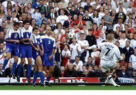
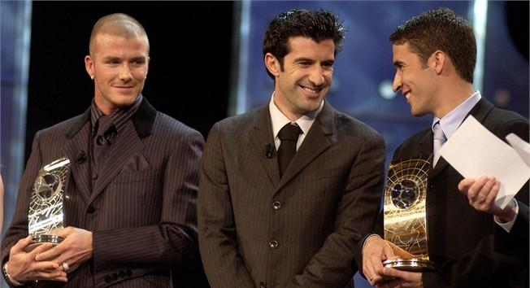

Chương Mười Một

hông mang tính chính trị và đầy rẫy thù hằn như những cuộc đối đầu Anh – Argentina, nhưng cặp đấu Anh – Đức cũng được coi là derby trên cấp độ đội tuyển quốc gia. Anh từng thắng Đức trong trận chung kết World Cup 1966, song từ độ ấy, Tam Sư luôn bị hiếp đáp bởi Đại Bàng, đến độ Gary Linerker phải cay đắng thốt lên: “Bóng đá là một trò chơi đơn giản: 22 cầu thủ đuổi theo một quả banh trong 90 phút, và kẻ thắng cuộc luôn là người Đức”. Anh gỡ gạc được ít thể diện khi vượt qua Đức ở Euro 2000, để rồi lại thua trong trận lượt đi vòng loại World Cup 2002[1], khiến Kevin Keegan phải từ chức. Trước trận lượt về, Anh chỉ đứng nhì bảng, kém Đức 6 điểm, nhiều khả năng phải đấu play-off mới giành được quyền đến Hàn Quốc và Nhật Bản.
Không mấy ai tin Anh hạ nổi Đức, ngay chính các cầu thủ Anh cũng không tự tin vào bản thân. Đành rằng Đức đang trong gian đoạn khủng hoảng, đánh bại họ tại Munich vẫn là một nhiệm vụ quá khó. Khi Carsten Jancker mở tỷ số cho Đức ngay phút thứ 6, mọi người đều xem đó là chuyện dĩ nhiên. Sớm bị dội gáo nước lạnh, đội trưởng Beckham vẫn giữ vững tinh thần. Từ pha đá phạt của anh, Michael Owen nhanh chóng gỡ hòa. Phút bù giờ thứ ba hiệp một, lại Beckham tung một đường chuyền hoàn hảo, Rio Ferdinand đánh đầu trả bóng cho Steven Gerrard lập công, đưa đội khách vượt lên dẫn trước. Lên tinh thần, Tam Sư làm chủ thế trận, chơi như “hành vân lưu thủy” trong hiệp hai. Michael Owen hoàn tất cú hattrick, trước khi Emile Heskey bồi thêm nhát kiếm cuối cùng, làm nên tỷ số không tưởng 5 – 1. Không nghi ngờ gì, đây là một trong những trận cầu vĩ đại nhất ĐTQG Anh từng chơi trong hơn trăm năm lịch sử. Sau trận đấu, trọng tài Pierluigi Collina tìm đến Beckham, xin được…đổi áo!
Nhờ trận thắng 5 – 1 hoành tráng, cùng chiến thắng 2 – 0 trước Albania sau đó, bước vào vòng đấu cuối cùng, Anh ngang điểm với Đức. Nếu thắng Hy Lạp, đội sẽ giành quyền dự World Cup bất chấp kết quả trận Đức – Phần Lan. Nếu Anh và Đức cùng hòa hoặc thua, Anh sẽ là đội xếp trên, do hơn về hiệu số thắng bại. Nhiệm vụ tưởng như dễ dàng, bởi Anh được đá sân nhà, mà Hy Lạp cũng chẳng phải đối thủ gì ghê gớm, song chắc do áp lực, các học trò Eriksson chơi như bị “cóng giò”, cứ khua đập tứ tung chẳng ra bài ra bản.
Hiệp một kết thúc với tỷ số 1 – 0 nghiêng về Hy Lạp, hiệp hai cũng không thấy khá. Sốt ruột vì đồng đội, David quyết định đá bao sân, gồng mình làm thay cả việc của các bạn. Không chỉ bám cánh phải, anh thường xuyên di chuyển vào giữa, thậm chí chạy cả sang cánh trái, vừa chạy về phòng thủ, đã phóng lên tìm cơ hội ghi bàn. Nỗ lực cuối cùng được đền đáp, khi Sheringham tận dụng một trong những quả đá phạt của David để đánh đầu ghi bàn, nhưng niềm vui chưa kịp lắng, Hy Lạp đã lập tức nâng tỷ số.
Trận đấu trôi về những giây cuối cùng, 2 – 1 vẫn là 2 – 1. Phút 93, tuyển Anh được hưởng quả phạt cách khung thành độ 25m: Cơ hội cuối cùng là đây. Teddy Sheringham đứng ra nhận quyền thực hiện cú sút.
-Không, Ted – David quả quyết – Cự ly quá xa cho anh.
Cả nước Anh nín thở, vận mệnh toàn đội tuyển đặt hết lên đôi vai David Beckham. David thở sâu vài hơi, trút đi áp lực, chạy đà, rồi tung sút. Trái bóng vẽ một đường cong hoàn hảo, lượn vào góc chết khung thành, thủ môn Hy Lạp chỉ biết chôn chân đứng nhìn. Từng ghi rất nhiều bàn thắng từ đá phạt, nhưng đây hẳn là bàn đẹp nhất của Beckham. Trên khán đài, người hâm mộ ôm nhau khóc vì vui sướng, dưới sân cỏ, đồng đội ùa đến, ghì chặt David. Martin Keown phấn khích hét vang:
-Tuyệt vời! Tuyệt vời! Không phải chú không ai làm nổi!
Nhờ bàn thắng quý hơn vàng của thủ lĩnh Beckham, tuyển Anh giành quyền vào thẳng World Cup, bởi trong trận còn lại, Đức cũng chỉ hòa Phần Lan.

Beckham sút phạt tung lưới Hy Lạp (Ảnh: Boxofficefootball)
Không chỉ tỏa sáng với ĐTQG, David còn tiếp tục trải qua một mùa 2000 – 2001 đầy thành công với Manchester United. Dường như không còn ai ngăn nổi Quỷ Đỏ trong giải ngoại hạng. CLB liên tiếp giành những trận thắng đậm đà: 6 – 0 trước Bradford, 5 – 0 trước Southampton,…ngay đến đối thủ cạnh tranh trực tiếp Arsenal cũng bị “đè ngửa” 6 – 1! Trong lần thứ ba liên tiếp VĐQG, United kiếm được 80 điểm, so với 70 của á quân Arsenal. Sở dĩ khoảng cách “chỉ có” 10 điểm, là vì David và đồng đội đã đăng quang từ vòng 35, trong ba vòng còn lại, họ ra sân đá như đùa, thua hết cả ba.
Thể hiện phong độ đỉnh cao, Beckham lần thứ hai được FIFA vinh danh là Cầu Thủ Xuất Sắc Thứ Nhì Thế Giới (sau Luis Figo)[2]. Cùng năm 2001, anh còn hân hạnh được đài BBC bình chọn là Vận Động Viên Thể Thao Xuất Sắc Nhất Đại Anh Quốc. Sau Bobby Moore, Paul Gascoigne, và Michael Owen, anh là cầu thủ bóng đá thứ tư nhận danh hiệu cao quý này. Sau anh, đến nay, mới có thêm người thứ năm là Ryan Giggs (2009).
Mùa kế tiếp, 2001 – 2002, đánh dấu thất bại trắng tay cho United. Theo thông báo từ trước, đây sẽ là mùa cuối cùng Sir Alex Ferguson cầm quân trước khi nghỉ hưu. Việc thầy sắp ra đi gây nên tâm lý hoang mang, mất tập trung ở Old Trafford, khiến đội thi đấu chuệch choạc, bị loại trên mọi mặt trận. Các trụ cột như Beckham, Roy Keane cũng trì hoãn việc ký hợp đồng mới, một khi chưa biết người kế vị thầy là ai. Đến khi Sir Alex đổi ý, không nghỉ hưu nữa, David mới đặt bút gia hạn hợp đồng. Theo thỏa thuận mới, David nhận lương 70 000 bảng/ tuần, nhưng CLB phải trả thêm 20 000 bảng/tuần cho quyền sử dụng hình ảnh của anh. Thông thường, cầu thủ là một phần đội bóng, đội bóng việc gì phải trả tiền để dùng hình ảnh của chính mình? Song David là ngôi sao quá lớn, cầu thủ quá đặc biệt, nên hợp đồng cũng phải đặc biệt.
Tuy CLB thất bại, cá nhân David lại rất thành công. Tháng 9 – 2001, trong trận gặp Tottenham tại White Hart Lane, anh lần đầu tiên đeo băng đội trưởng United. Trước trận, Sir Alex chẳng hề thông báo sẽ chọn David làm thủ quân, ông chỉ đi ngang, đưa cho anh xấp vé mời. David hiểu ngay, vì mỗi trận, CLB đều phân phát vé cho cầu thủ để mời người thân, và người lãnh trách nhiệm chia vé cho đồng đội luôn là đội trưởng. Hiển nhiên, khi Roy Keane trở lại, vai trò thủ lĩnh lại thuộc về Keane, nhưng làm thủ quân Quỷ Đỏ một ngày cũng đủ là kỷ niệm đáng nhớ.
Quả thật, không ai có thể quên trận United – Tottenham năm đó. Mới hết hiệp một, đội khách đã thua trắng 3 bàn. Vậy mà trong giờ nghỉ, Sir Alex không nổi giận, cũng không “sấy” ai. Sir tâm lý lắm, đã thua 3 – 0 mà còn “sấy” thì cầu thủ xuống hết tinh thần, không bằng cứ nhẹ nhàng mà động viên. Hiệp hai, United trình diễn một lối chơi khác hẳn. Cole, Blanc, Van Nistelrooy, và Veron lần lượt ghi bàn, rồi đích thân Beckham ấn định tỷ số 5 – 3.
Mùa 01 – 02, David kiến tạo hàng loạt bàn thắng cho Van Nistelrooy, giúp trung phong người Hà Lan giành giải Cầu Thủ Xuất Sắc Nhất Nước Anh của PFA. Chính David cũng ghi được đến 16 bàn, thành tích tốt nhất của anh trong màu áo United. Đẹp nhất trong số đó là cú sút lái bóng cách khung thành đến 30m trong trận thắng Deportivo La Coruna 2 – 0, tứ kết lượt đi Cúp C1.
Rủi thay, cũng tại trận đấy, David dính phải chấn thương. Chưa lành hẳn, anh tập tễnh ra sân trong trận lượt về, chỉ để nhận lãnh cú vào bóng cực kỳ thô bạo của Aldo Duscher. Tưởng chỉ đau thường, David bảo nhân viên y tế:
-Xịt thuốc vào đi. Khỏi ngay thôi, không sao đâu.
Không ngờ xịt thuốc xong, David vẫn không đứng nổi. Bác sỹ của United phải tháo giày anh ra, khám thật kỹ lưỡng. Kết quả hội chẩn: Gãy xương bàn chân. Từ trên khán đài, Victoria vội vã dắt con chạy xuống, cùng mọi người đưa chồng lên xe cứu thương, vào gấp bệnh viện.
Suốt cả tháng, David phải chống nạng, tránh đụng chạm mạnh. Anh chỉ có thể ngồi trước TV xem United đấu bán kết C1 với Bayer Leverkusen, chứng kiến đội bóng thân yêu bị CLB Đức loại, và cảnh bạn thân Gary Neville bị gãy xương y hệt như mình[3]. Beckham thật có duyên nợ với người Argentina. Vì Diego Simeone, anh lãnh thẻ đỏ tại France 98, nay vì Aldo Duscher, một tiền vệ Argentina khác, anh có nguy cơ lỡ mất World Cup 2002.
Sau khi chân đã đỡ đau, David giành hàng giờ miệt mài trong phòng tập thể lực, hy vọng có thể phục hồi cho World Cup. Bốn năm trước, anh bị coi là “tội đồ dân tộc”, còn giờ đây, cả đất nước cùng nín thở cầu nguyện cho anh. Một tờ báo giành hẳn một cột để hằng ngày thông báo tình hình chấn thương của Beckham. Một anh phóng viên báo khác gõ cửa nhà ông Ted, đưa tặng ông bức hình khổng lồ chụp…chân David. Theo lời phóng viên, cứ mỗi ngày vào lúc chính ngọ, lấy tay sờ vào hình thì David sẽ mau bình phục!
Không phải thi đấu, David có nhiều thời giờ hơn giành cho…showbiz. Anh trở thành người đàn ông đầu tiên xuất hiện trên trang bìa tờ tạp chí phụ nữ danh tiếng Marie Claire, và giành cho tạp chí này bài phỏng vấn độc quyền. Trong bài phỏng vấn, David trả lời một số câu hỏi khá nhạy cảm. Như khi được hỏi về việc Victoria mang thai[4], anh đáp:
-Tôi nghĩ người phụ nữ gợi tình nhất vào lúc bắt đầu có bầu. Thật sự, khi Victoria mang thai, tôi thấy cô ấy rất hấp dẫn.
-Thế còn lời đồn anh rất “dữ dội” trong chuyện chăn gối thì sao?
-À, đó là một trong những lời đồn rất đúng về tôi đấy…
Trước lúc lên đường dự World Cup, David và Victoria bỏ ra 350 000 bảng tổ chức một dạ tiệc xa hoa tại “Beckingham Palace”. Khách mời gồm các nhân vật tên tuổi trong hai giới nghệ sỹ và túc cầu như Sir Elton John, Joan Collins, Emma Bunton, Natalie Imbruglia, George Best, Sven Goran Eriksson, và các tuyển thủ trong ĐTQG Anh…Cùng có mặt còn có nhìều nhà tài phiệt, và mấy…sư thầy Phật giáo. Ca sỹ Beverley Knight và Russell Watson biểu diễn giúp vui, theo sau bằng những màn xiếc và võ thuật.
World Cup sẽ diễn ra ở Nhật, nên không gian tiệc được dàn dựng theo phong cách Phù Tang. Chủ nhân cho trang hoàng sảnh tiệc với đèn lồng và bạch lạp, cùng 60 000 bông hoa lan thanh nhã được cấp tốc nhập khẩu từ Nhật và Indonesia. Đại sảnh chia ra bốn khu rõ rệt: Khách muốn ăn thì ngồi vô bàn tiệc, muốn nhảy thì sang chỗ khiêu vũ, mệt mỏi muốn nghỉ ngơi thì vào khu rừng trúc hoặc thủy viên. Thức ăn toàn những món Đông Phương, các cô phục vụ ai nấy đều mặc kimono, giả làm geisha. David đón chào quan khách trong bộ cánh đen, quấn dây lưng lụa đỏ, tai lấp lánh đôi bông hột xoàn, còn Victoria diện váy hở vai hiệu Ricci Burns.
Tuy xa xỉ, buổi tiệc cũng có ý nghĩa, vì ngoài màn ăn chơi, còn có sự kiện đấu giá quyên tiền cho từ thiện. David đóng góp một đôi giày cũ, được mua lại với giá lên đến hơn 20 000 bảng.
Tiệc tàn, ĐTQG Anh dẫn dắt theo bầu đoàn thê tử đến… Trung Đông, nghỉ ngơi 5 ngày ở thiên đường mua sắm Dubai. Hết ngày thứ năm, các cầu thủ (và cả HLV nữa) mới phải chia tay vợ và bạn gái để bay sang Nhật – Hàn. Một nhân chứng có mặt lúc đó kể lại cảnh chia tay giữa David và Victoria:
-Không khác cảnh trong phim tình cảm lãng mạn. Hai vợ chồng ai cũng rầu rĩ. David nhìn buồn rười rượi, không cười nổi lấy một lần. Người ta nói anh ấy là người của gia đình, thật không sai chút nào. Anh và Victoria cứ cầm chặt tay nhau, thỉnh thoảng[5] lại hôn môi, rồi ghé tai nhau thì thầm gì đó. David cúi xuống ôm Brooklyn, rồi lại ôm Victoria. Mắt hai người ngân ngấn nước.

Beckham nhận giải Cầu Thủ Xuất Sắc Thứ Nhì Thế Giới 2001. Bên cạnh là Figo (thứ nhất) và Raul (thứ ba). Ảnh: FIFA
Chú thích:
[1] Tại vòng loại World Cup 2002, Beckham lần đầu ghi bàn cho tuyển Anh từ một pha bóng sống. Đó là bàn ấn định tỷ số trong trận Anh thắng Phần Lan 2 – 1.
[2] Anh sở hữu đến bốn cầu thủ từng giành Quả Bóng Vàng France Football: Sir Stanley Matthews, Sir Bobby Charlton, Kevin Keegan, và Michael Owen, nhưng chưa ai thắng giải Cầu Thủ Xuất Sắc Của FIFA, duy một mình Beckham 2 lần về nhì. Ngoài ra, Frank Lampard cũng từng một lần về hạng nhì, Gary Lineker và Alan Shearer cùng một lần về hạng ba.
[3] Xui cho Neville. Anh chấn thương giống Beckham, nhưng muộn hơn vài tuần, nên chắc chắn không kịp bình phục trước World Cup.
[4] Victoria đang mang thai con trai thứ hai, Romeo.
[5] Thỉnh thoảng, không phải thi thoảng!